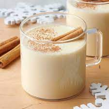

Eggnog

A creamy, wintery bev
This delicious drink is as ancient as the mountains
and as creamy as a carton of expired milk. Yes it
does contain raw egg but with an alcoholic proof of
99%, it is perfectly safe for human consumption.
Ingredients
- 20 Large Eggs
- Milk probably
- Vodka
- Cinammon (optional)
- Nutmeg (not optional)
Our Eggnog Recipe
- Mix the eggs, milk, and vodka.
- Sprinkle the nutmeg and cinammon (if using) on top.